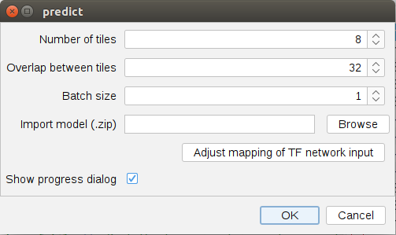
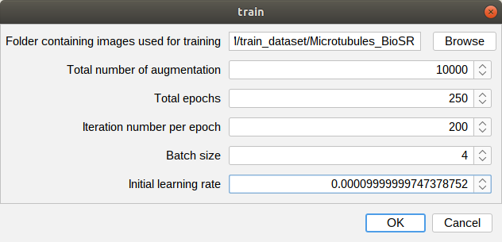

Tutorial
** We will release the related code and plugin once our manuscirpt is accepted. **
content
- 1. Matlab code for image re-corruption and SIM reconstruction
- 2. Python code for network training and inference
- 3. Fiji plugin
1. Matlab source code
Create the training dataset
The training dataset of RES-SIM is generated with a series of low-SNR raw image stacks (3*3 for a 2D/TIRF-SIM image, 3*5*z for a 3D-SIM volume, and 1*3 for a LLS-SIM slice). For each raw image stack, we first employ the image re-corruptiont strategy form a corrupted image stack pair, then apply convention SIM algorithm to form a corrupted image (volume) pair, and final arrange them as the input data and target data, respectively. By repeating this operations to each image stack, the final training dataset is formulated. Typically, 30~50 individual image stacks is adequate for a successful training.
To create the training dataset, please execute the file “Create_training_dataset.m” in the Matlab command window as
run('Create_training_dataset.m');
Several parameters need to assign in the file “Create_training_dataset.m”, including:
The parameter for file io:
| Parameter name | Description |
| Smpl_name | The name of the smple. |
| File_dir | The directory to load the raw data, default is the 'data' folder in current directory. |
| Save_file_dir | The directory to save the data, default is the 'data' folder in current directory. |
| Save_file_format | The format for saving the re-corrupted data. The format of '.npy' (recommended for fast IO during the training), '.tif', and '.mat' is supported by now. Please note that if the '.tif' format is selected, please make sure the data is save in 'double' mode, otherwise the negative value will be discarded and the denoising performance will be degraded. |
The parameters for SIM modulation:
| Parameter name | Description | Typical value (based on our optical system) |
| k0 | A complex number list representing the illumination pattern in Fourier field. Each invidual number denotes the information for the corresponding direction. The absolute value denotes the period of the spatial Moore Fringe (the inverse of its period), and the phase value denotes the direction of the pattern. For 2D/TIRF/3D-SIM modality, 3 directions are employed, and for LLS-SIM modality, 1 direction is employed | Noted in the code file. |
| mod_factor | A complex number list representing the modolation factor for each pattern. Each invidual number denotes the information for the corresponding pattern. The absolute value denotes the modulation depth (the intensity ratio of the corresponding order to 0-order), and the phase value denotes the spatial shift. For 2D/TIRF/LLS-SIM modality, 3 patterns are employed, and for 3D-SIM modality 5 patterns are employed. | Noted in the code file. |
| wiener_param | Paramamter used for Wiener filter. The proper setting of its value is related to the SNR of the raw images, as the low wiener_param value should be used for low SNR inputs. | From 0.001 to 0.05 |
| otf_path | The path where the otf file is saved. For commercial SIM system, the otf file should be located in the configuration folder. If it is not available, it can also be estimated by open-source package fairSIM[1]. | - |
| NA_em | The effective detection NA of the microscopy system. This parameter is used for precise estimation of the system OTF. | 1.3 |
| lambda_em | The wavelength of the emission light (in nm). This parameter is used for precise estimation of the system OTF. | 525/609/705 |
| n_imm | The refractive index of the immersion oil. This parameter is used for precise estimation of the system OTF. | 1.78 for TIRF-SIM, 1.51 for 3D-SIM and 0.5 for LLS-SIM |
The parameters for image re-corruption:
| Parameter name | Description | Typical value range ([min, max]) |
| α | Noise control factor: to adjust the re-corruption intensity | [2, 5] |
| β1 | Poisson factor: to represent the intensity of signal-related noise (e.g. shot noise) | [0.8, 3] |
| β2 | Gaussian factor: to represent the intensity of Gaussian white noise (e.g. readout noise) | [0.4, 6] |
| repeat_time | The number of re-corruption operations applied for each image stack. (For the purpose of enriching the training dataset) | 3 |
Pre-process the noisy data for inference
During the inference phase, the noisy raw data is first reconstructed by conventional SIM algorithm to generated the noisy SIM SR images (volumes), then fed into the pre-trained model to output the final denoised images (volumes).
To generated the data for network input, please run the code in Matlab command window as:
run('SIM_reconstruction.m');
Similar to create the training dataset, the file Io parameters and the SIM modulation parameter need to be assigned in the code.
The conventional SIM reconstruction algorithm can also be replaced with your own code,
e.g. the open-source package fairSIM[1], Hifi-SIM[2], and OpenSIM[3].
2. Python source code
The python code is set for network training and denoising implementation. To accelerate the training process, a GPU equipped computer is required.
Environment installation
To avoid the version incompatible problem. We highly recommend to install RES-SIM in a CONDA vitual environment as
conda create -n ressim python=3.7
The packages required for RES-SIM are listed in file ‘requirements.txt’, which can be installed by pip or conda package management command.
Pleased note that the suggested version information is only validated on our working station, and possibly need to be changed to adjust your specific environment.
conda install pytorch torchvision torchaudio pytorch-cuda==11.6 -c pytorch -c nvidia
pip install tifffile
pip install tensorboardX
To begin the training or inference processing, just activate the vitual environment and the excecute the corresponding code.
cd ./
conda activate ressim
Network training
Before the training, we need to organize the folder saving the training dataset in the following mode (if the dataset is generated with aforementioned Matlab code, this requirement will be already satisfied):
- root_dir
- input — to save the input data for training
- target — to save the target data for training
- val_raw — to save the input data for validation
- infer_raw — to save the input data for denoising inference
Please note that the files in input folder and target folder should be strictly paired (We highly recommended to name the paired files with the same name as ‘000001.npy’ to avoid the mismatching),
otherwise a warning window will appear. If your want to change the dataset archetecture, please re-write the related data IO code in ‘dataset.py’.
Our code is developed based on open source architecture KAIR (https://github.com/cszn/KAIR), in which the interface for multiple network, model and dataset is provided.
The training condition is defined in the ‘.json’ file located in folder ‘options’. To change the training condition, just modify the parameters in the corresponding file.
The main tubable parameters for training are listed in the following table, and other customized parameters can be added for the specific use.
| Parameter name | default | Description |
|---|---|---|
| optimizer type | adam | The type of optimizer used to train the network |
| initial learning rate | 1e-4 | The initial learning rate |
| scheduler type | adam | The type of scheduler used to train the network |
| scheduler milestones | 1e-4 | The time point to decrease the learning rate |
| scheduler gamma | 1e-4 | The decay ratio of initial learning at each scheduler point |
| checkpoints | 1e-4 | The time point to perform the validation |
Although we only used U-net as the network backbone in this work, it is usable to employ other network archetecture, such as RCAN and RDN. We also provided the interfaces for these network.
If your want to employed other network,
just created a new ‘.py’ file for network and a ‘.json’ file for training condition, and then create a link by adding a selection in ‘select_model.py’.
To run the training script, the following parameters need to be assigned as:
| Parameter name | type | Description |
|---|---|---|
| smpl_dir | str | The local directory saving the dataset, default is the folder ‘./dataset’ in current directory |
| smpl_name | str | The name of the sub folder saving the sample data |
| data_format | str | The format of the raw data file, e.g. ‘npy’, ‘mat’, ‘tif’, default is ‘npy’ |
| network_type | str | The type of network used in the model, e.g. ‘unet’, ‘rcan’, ‘rdn’ |
| gpu_id | str | The specific gpu device assigned for training, default is 0 |
| save_suffix | str | The suffix of the saving model |
| preload_data_flag | bool | The logial variable indicating whether to pre-load all data in memory to accerlate the training, default is False |
| load_model_iter | int | The iteration of the pre-trained model to load, default is 0 (to train a new model) |
The example code for training is :
python Main_train.py --smpl_dir dataset --smpl_name microtubules --data_format npy --network_type unet --gpu_id 0 --save_suffix _1 --preload_data_flag --load_model_iter 0
Denoising
To implement the denoising with the pre-trained model, just run the following command:
| Parameter nane | type | Description |
|---|---|---|
| smpl_dir | str | The local directory saving the dataset, default is the folder ‘./dataset’ in current directory |
| smpl_name | str | The name of the sub folder saving the sample data |
| model_suffix | str | The suffix of the pre-trained model |
| data_format | str | The format of the raw data file, e.g. ‘npy’, ‘mat’, ‘tif’, default is ‘npy’ |
| network_type | str | The type of network used in the model, e.g. ‘unet’, ‘rcan’, ‘rdn’ |
| gpu_id | str | The specific gpu device assigned for training, default is 0 |
| load_model_iter | int | The iteration of the specific model to load, default -1 (indicating the last iteration) |
| test_patch_size | int | The size of the cropped region of the test images, default is 1000. |
| model_patch_size | int | The size of the mini image patch input to the network, default is 128 |
python Main_test.py --smpl_dir data --smpl_name Microtubules --model_suffix _1 --data_format npy --network_type unet --gpu_id 0 --load_model_iter -1
Examples
A representative training dataset and inference dataset are located in the ‘dataset’ of current repository. To provide a intuitive view of our software, we also uploaded the corresponding pre-trained for this dataset. The example training image and denoised are shown in the following figure.

3. Fiji plugin
To make our work convenient for more biological researchers, we also provided a ready-to-use Fiji plugin for SIM denoising. The detailed instruction of our plugin is provided in the following section.
Install
- Copy all the files in folder
./jars./pluginsto the corresponding folder in/$YourPath/Fiji.app/ - Restart Fiji
-
Access to RES-SIM plugin is as “Fiji menu -> plugins -> RES-SIM”:

Denoised with RES-SIM plugin
- Open Fiji.
- Open/Choose an image.
- Find the corresponding model in ‘./models’, or you can export your model as ZIP file following this gist in python code and Tensorflow <= 1.15.0 environment.
- Run the plugin via
Plugins > RES-SIM > Predict. -
Designate the following parameters for predicting image:

Number of tiles: Part the large input image to several small images while predicting, to avoid out of memory error, and to accelerate the progress of predicting.
Overlap between tiles: The percentage of the pixels in the edge overlapped between the adjacent tiles. Since the edge regions in each tile is lack of effection information, less overlapped ratio will introduce more stitching seam artifact. The typically setting of the overlapped ration of 32% is adequate to mininize this effect.
Batch size: The number of image predicted at one time, to accelerate the progress of predicting for large GPU/CPU memory.
Import model (.zip): Press
Browseto load the saved model.Adjust mapping of TF network input: Press
Adjust mapping of TF network inputbutton, and adjust the match of dimensions of image and dimensions of input in the model. When using RES-SIM 3D model, please check the third dimension of image is matched with `3[153]` dimension of model.Show progress dialog: Show log information in predict progress.
After the aformentioned setting is done, by pressing Ok, the predicting progress will begin and the following UI will be shown:

Train with RES-SIM plugin
- Open input and target data as two separated stack files with Fiji.
- Run the plugin via
Plugin > RES-SIM > train. -
Adjust the following parameters for training:

Input image for training: Choose the input images of dataset.
GT image for training: Choose the ground truth images of dataset.
Total epochs: How many times of dataset performing during training.
Iteration number per epoch: Iteration number of model in one times of dataset performed during training.
Batch size: the number of input images batched in one iteration of model.
Initial learning rate: The learning rate at start of training.
-
Run the plugin by pressing
Ok. - During Training, You can track the training progress via UI showed below:
-
Train preview window shows the input image and output image of the current training status.

- You can see the training loss and validation loss ploted below.

- Press
Cancel > Closeto dispose training progress. - Press
Finishto finish training progress and save model following instructions below. - Press
Export Modelto export the lastest save model at current status following instructions below without disposing training progress.
- Press
- When pressing
FinishorExport Model, you will see the information of the saved model.- In
OverviewMetadatainputs & outputsTraining, you will see the parameters of trained model. - Press
File actions > Save to..to save the file of trained model. - Extract the file of trained model,
./tf_saved_model_bundle.zipis used for model file(.zip) inPlugin > Plugin > RES-SIM > Predict.

- In
-
Switching the TensorFlow version
By default, RES-SIM Fiji Plugin ships with TensorFlow 1.15.0 which is compatible to CUDA 10.0 and cuDNN >= 7.4.1. For supporting a model trained with a specific TensorFlow version or for GPU support:
- Open
Edit > Options > TensorFlow... - Choose the version matching your system / model.
- For GPU support, install CUDA and cuDNN matching the TensorFlow version you choose, and make sure Fiji knows about the installation paths.
- Wait until a message opens telling you that the library was installed.
- Restart Fiji.

(More functions, e.g. the 3D model training with RES-SIM plugin is under developing, and will be released in the further).
Reference
[1] Müller M, Mönkemöller V, Hennig S, et al. Open-source image reconstruction of super-resolution structured illumination microscopy data in ImageJ[J]. Nature communications, 2016, 7(1): 1-6.
[2] Wen G, Li S, Wang L, et al. High-fidelity structured illumination microscopy by point-spread-function engineering[J]. Light: Science & Applications, 2021, 10(1): 1-12.
[3] Lal A, Shan C, Xi P. Structured illumination microscopy image reconstruction algorithm[J]. IEEE Journal of Selected Topics in Quantum Electronics, 2016, 22(4): 50-63.